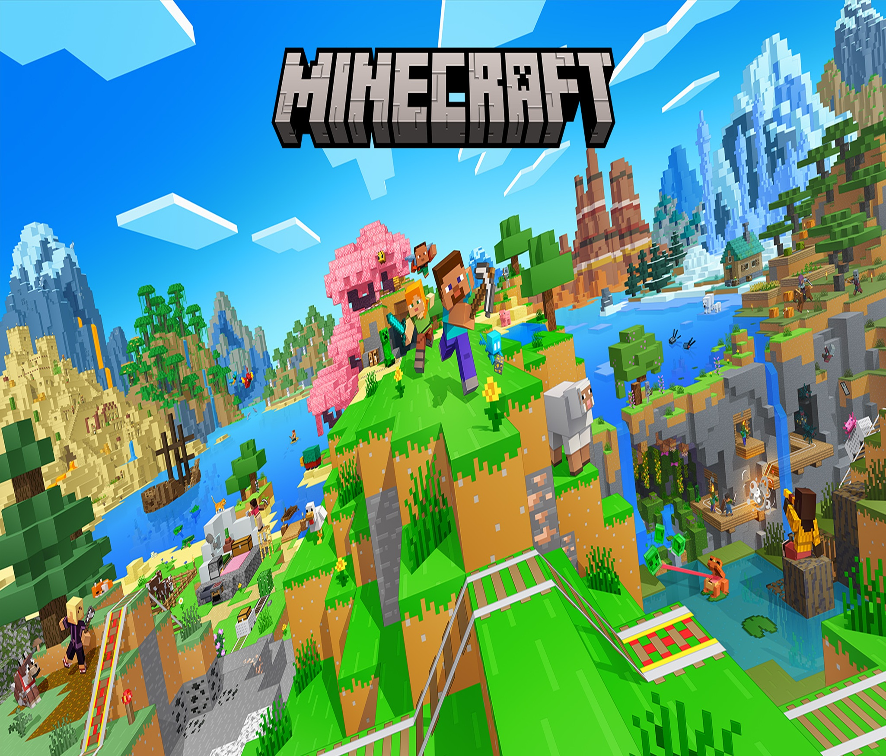

Minecraft adalah game sandbox yang dikembangkan oleh Mojang Studios dan pertama kali dirilis pada 17 Mei 2009. Game ini memungkinkan pemain untuk menjelajahi dunia yang terdiri dari blok-blok dan membangun berbagai struktur, bertahan hidup, serta berkreasi tanpa batas. Selain itu, Minecraft juga memiliki multiplayer, memungkinkan pemain untuk bermain bersama di dunia yang sama, serta fitur modding yang memungkinkan komunitas untuk menciptakan konten baru dan memperluas gameplay. Game ini tersedia di berbagai platform, termasuk Windows, Mac, Linux, PlayStation, Xbox, Nintendo Switch, dan perangkat mobile